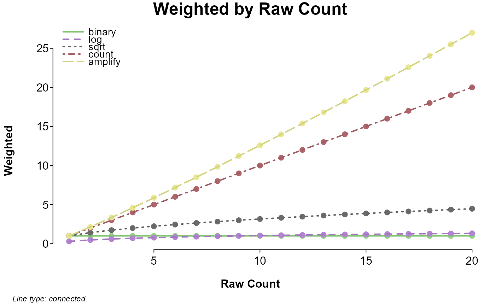

Weight a document-term matrix.
Usage
lma_weight(dtm, weight = "count", normalize = TRUE, wc.complete = TRUE,
log.base = 10, alpha = 1, pois.x = 1L, doc.only = FALSE,
percent = FALSE)Arguments
- dtm
A matrix with words as column names.
- weight
A string referring at least partially to one (or a combination; see note) of the available weighting methods:
Term weights (applied uniquely to each cell)
binary(dtm > 0) * 1
Convert frequencies to 1s and 0s; remove differences in frequencies.loglog(dtm + 1, log.base)
Log of frequencies.sqrtsqrt(dtm)
Square root of frequencies.countdtm
Unaltered; sometimes called term frequencies (tf).amplifydtm ^ alpha
Amplify difference in frequencies.
Document weights (applied by column)
dfloglog(colSums(dtm > 0), log.base)
Log of binary term sum.entropy1 - rowSums(x *log(x + 1, log.base) /log(ncol(x), log.base),na.rm = TRUE)
Wherex = t(dtm) / colSums(dtm > 0); entropy of term-conditional term distribution.ppois1 - ppois(pois.x,colSums(dtm) / nrow(dtm))
Poisson-predicted term distribution.dpois1 - dpois(pois.x, colSums(dtm) / nrow(dtm))
Poisson-predicted term density.dfmloglog(diag(dtm[max.col(t(dtm)), ]), log.base)
Log of maximum term frequency.dfmaxdiag(dtm[max.col(t(dtm)), ])
Maximum term frequency.dfcolSums(dtm > 0)
Sum of binary term occurrence across documents.idflog(nrow(dtm) / colSums(dtm > 0), log.base)
Inverse document frequency.ridfidf - log(dpois, log.base)
Residual inverse document frequency.normalsqrt(1 / colSums(dtm ^ 2))
Normalized document frequency.
Alternatively,
'pmi'or'ppmi'will apply a pointwise mutual information weighting scheme (with'ppmi'setting negative values to 0).- normalize
Logical: if
FALSE, the dtm is not divided by document word-count before being weighted.- wc.complete
If the dtm was made with
lma_dtm(has a'WC'attribute), word counts for frequencies can be based on the raw count (default;wc.complete = TRUE). Ifwc.complete = FALSE, or the dtm does not have a'WC'attribute,rowSums(dtm)is used as word count.- log.base
The base of logs, applied to any weight using
log. Default is 10.- alpha
A scaling factor applied to document frequency as part of pointwise mutual information weighting, or amplify's power (
dtm ^ alpha, which defaults to 1.1).- pois.x
integer; quantile or probability of the poisson distribution (
dpois(pois.x, colSums(x,na.rm = TRUE) / nrow(x))).- doc.only
Logical: if
TRUE, only document weights are returned (a single value for each term).- percent
Logical; if
TRUE, frequencies are multiplied by 100.
Note
Term weights works to adjust differences in counts within documents, with differences meaning
increasingly more from binary to log to sqrt to count to amplify.
Document weights work to treat words differently based on their between-document or overall frequency.
When term frequencies are constant, dpois, idf, ridf, and normal give
less common words increasingly more weight, and dfmax, dfmlog, ppois, df,
dflog, and entropy give less common words increasingly less weight.
weight can either be a vector with two characters, corresponding to term weight and
document weight (e.g., c('count', 'idf')), or it can be a string with term and
document weights separated by any of :\*_/; ,- (e.g., 'count-idf').
'tf' is also acceptable for 'count', and 'tfidf' will be parsed as
c('count', 'idf'), though this is a special case.
For weight, term or document weights can be entered individually; term weights alone will
not apply any document weight, and document weights alone will apply a 'count' term weight
(unless doc.only = TRUE, in which case a term-named vector of document weights is returned
instead of a weighted dtm).
Examples
# visualize term and document weights
## term weights
term_weights = c('binary', 'log', 'sqrt', 'count', 'amplify')
Weighted = sapply(term_weights, function(w) lma_weight(1:20, w, FALSE))
if(require(splot)) splot(Weighted ~ 1:20, labx = 'Raw Count', lines = 'co')
#> Loading required package: splot

## document weights
doc_weights = c('df', 'dflog', 'dfmax', 'dfmlog', 'idf', 'ridf',
'normal', 'dpois', 'ppois', 'entropy')
weight_range = function(w, value = 1){
m = diag(20)
m[upper.tri(m, TRUE)] = if(is.numeric(value)) value else unlist(lapply(
1:20, function(v) rep(if(value == 'inverted') 21 - v else v, v)
))
lma_weight(m, w, FALSE, doc.only = TRUE)
}
if(require(splot)){
category = rep(c('df', 'idf', 'normal', 'poisson', 'entropy'), c(4, 2, 1, 2, 1))
op = list(
laby = 'Relative (Scaled) Weight', labx = 'Document Frequency',
leg = 'outside', colorby = list(quote(category), grade = TRUE),
lines = 'connected', mv.scale = TRUE, note = FALSE
)
splot(
sapply(doc_weights, weight_range) ~ 1:20,
options = op, title = 'Same Term, Varying Document Frequencies',
sud = 'All term frequencies are 1.'
)
splot(
sapply(doc_weights, weight_range, value = 'sequence') ~ 1:20,
options = op, title = 'Term as Document Frequencies',
sud = 'Non-zero terms are the number of non-zero terms.'
)
splot(
sapply(doc_weights, weight_range, value = 'inverted') ~ 1:20,
options = op, title = 'Term Opposite of Document Frequencies',
sud = 'Non-zero terms are the number of zero terms + 1.'
)
}
#> Error in ncol(x): object 'category' not found